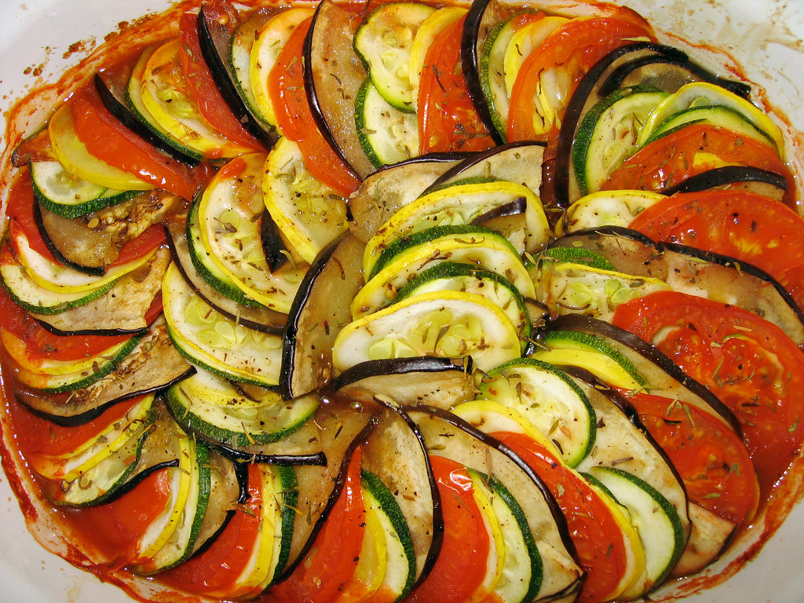
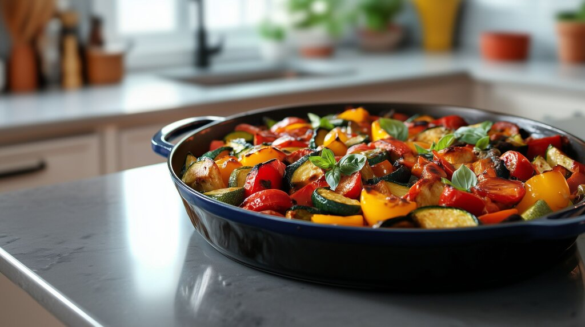
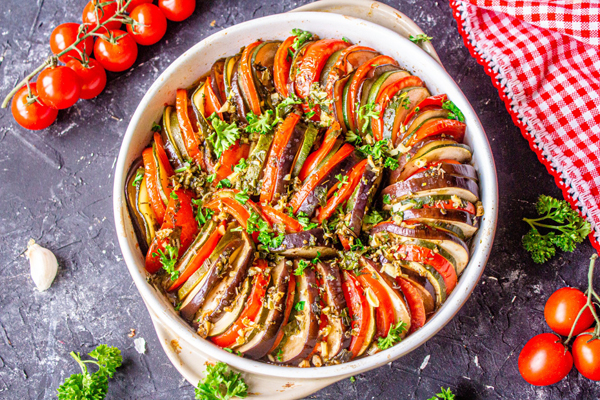

Ratatouille



Description
This ratatouille recipe is my version of the terrific French vegetable stew made with fresh tomatoes and lots of summer vegetables. It's very versatile side dish and makes a delicious vegetarian main dish, too.
Ingredients
- Garlic
- Oil
- Zucchini
- Eggplant
- Tomatoes
- Mushrooms
- Salt
- Parmesan
Steps
- In a skillet, cook the garlic in olive oil. Add the eggplant, parsley, and salt.
- Cook until the eggplant is tender, then spread the mixture in a prepared casserole dish and sprinkle with Parmesan.
- Spread the zucchini on top and sprinkle with more cheese. Continue layering according to the instructions in Step 3.
- Bake the ratatouille in the preheated oven until the vegetables are tender.
Home